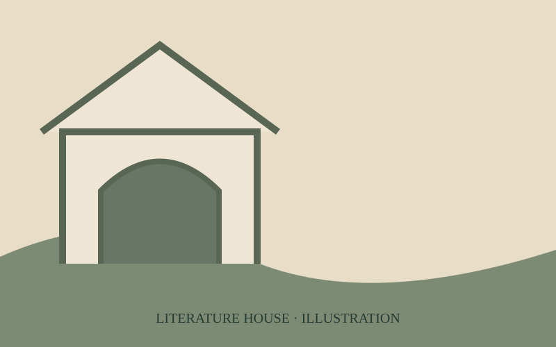
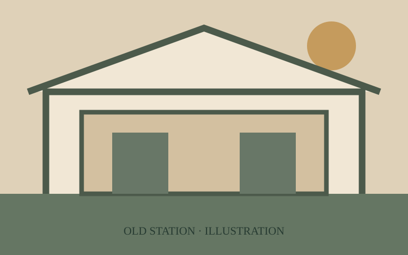

STORY & LOCATION
故事與場景
一枚吊飾，串起青春時光與多年後的重逢。
故事大綱
故事以成年女主角在火車上翻閱手機相簿為開頭，透過照片回到青春時光。高中時期，女 1 帶著原本對古蹟不感興趣的女 2，走訪臺中文學館與臺中驛鐵道文化園區。從鐵道歷史、特色空間到市集體驗，兩人逐漸發現古蹟不只是保存歷史的場所，也能融入日常生活，創造不同的體驗與回憶。
旅程中，兩人買下吊飾作為紀念，並約定好好保存。多年後，成年女 1 在車站再次遇見掛著相同吊飾的女 2，熟悉的信物喚起青春回憶。故事藉由重逢呈現臺中驛如何結合鐵道歷史與多元生活體驗，成為承載青春記憶的城市場域。

STORY LOCATION 01
臺中文學館
故事中兩位女孩探索文化場域的其中一站，透過走訪與觀察，讓原本對古蹟不感興趣的角色開始接觸不同的文化空間。

MAIN LOCATION
臺中驛鐵道文化園區
以第二代臺中火車站為核心，結合舊月台、鐵道設施與周邊歷史建築，是本企劃主要介紹的場域。園區兼具鐵道文化、文化資產再利用及多元活動空間。
故事中的情感信物
相同吊飾象徵兩人共同珍藏的回憶。多年後再次看見吊飾，讓角色認出彼此，也呼應企劃想傳達的概念：古蹟不只記錄城市歷史，也能保存人們在此留下的生活足跡。
目前頁面圖片為原創示意插畫，並非實際拍攝劇照；正式發表時可替換為團隊取得授權的照片或影片截圖。